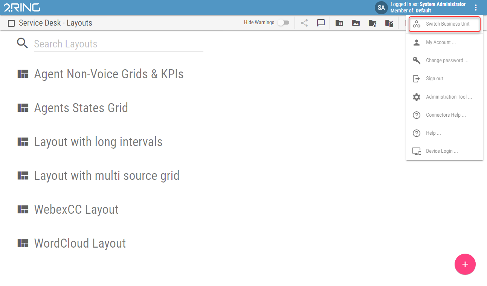
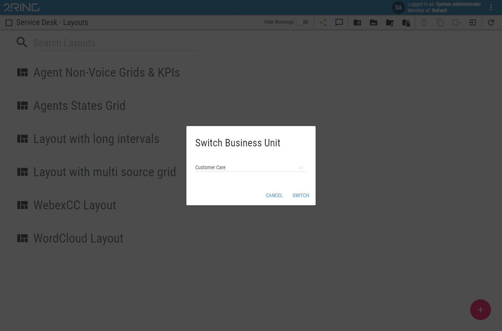

Switching Business Unit¶
A Business Unit, also called BU, is the main security boundary of the system. All users and sources of the DW application such as Layouts are part of a specific BU. For more info about Business Units see ../../administration-tool-guide/business-units chapter.
A user can see only things, that belongs to his BU. If user is a member of multiple BUs, only one can be accessed at once. The active BU can be changed in the Switch Business Unit dialog. The dialog can be accessed from the Application Menu. For more info about Application Menu see Application Menu chapter.
The last selected Business Unit is remembered even after closing and reopening the browser.
Figure 1: Switch Business Unit Button
Figure 2: Switch Business Unit Dialog
The Switch Business Unit dialog contains a dropdown, listing all BUs, the user is part of. Selecting a BU and clicking the switch button will change the active Business Unit.
Switching a Business Unit when viewing a Layout will navigate to the Layout list.